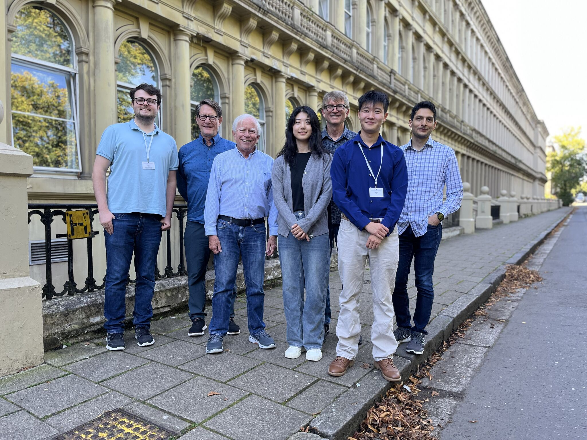

College of Connected Computing
Understanding how emotions shape human–machine interaction
We build systems that recognize, model, and respond to human affect — bridging cognitive science, AI, and social simulation.

About the Lab
The Affective Computing Group at Vanderbilt University investigates how emotional and social intelligence can be modeled computationally and embedded in interactive systems. Our work spans virtual humans, negotiation agents, and affective interfaces — with applications in training, therapy, and education.
News
Aug 2026
The Affective Computing Group officially launches at Vanderbilt University's College of Connected Computing!